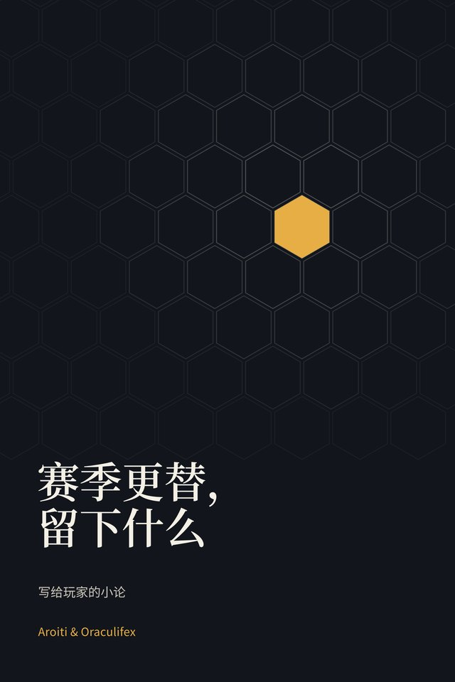

Oracle 暂未开放
Oracle 是 Aroiti 用来衡量自己对局的数据工具，书中的数字就来自它。目前还不对访客开放。
还没有开放。 在 X 上关注 Aroiti赛季更替，留下什么
写给玩家的云顶之弈小论
阵容几个月就会消亡，决定留了下来。这本书讲的是跨越每个赛季依然存在的东西，以及如何面对一局从未有人打过的游戏：下一局。
免费，无需注册。 81 页.

Oracle 是 Aroiti 用来衡量自己对局的数据工具，书中的数字就来自它。目前还不对访客开放。
还没有开放。 在 X 上关注 Aroiti写给玩家的云顶之弈小论
阵容几个月就会消亡，决定留了下来。这本书讲的是跨越每个赛季依然存在的东西，以及如何面对一局从未有人打过的游戏：下一局。
免费，无需注册。 81 页.
